For All Generations of Alaskans: How Sustainable is the Statutory Alaska Permanent Fund Dividend?
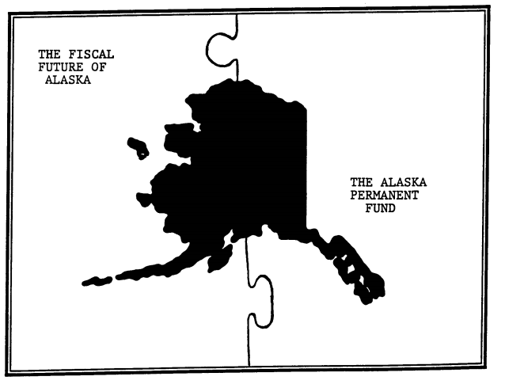Image: from the 1989 annual report.
From 1983 to 2015, every woman, man, kid, and baby received an Alaska Permanent Fund Dividend check with an amount calculated by a 1982 law. It was rarely questioned publicly until the last five years because of ample petroleum revenues and several years of cushion thanks to the billions in the Constitutional Budget Reserve (now just fumes.)
A former APFC website via waybackmachine.
Thanks in part to a booming stock market that prescribes a big dividend (around $3,000 per citizen), a reckoning for the 1982 calculation has begun. Maybe. By many descriptions, it’s “full,”, “lawful,” and “traditional” payout. Others call the same statutory dividend going forward is “unsustainable”, or “irresponsible”. In testimony to an Alaska House committee this year, after admonishing the legislature, a citizen in seven words laid the foundation for what I want to explore.
“Do NOT mess with the Permanent Fund!,” wrote the Soldotna resident. “The original formula has worked just fine.”
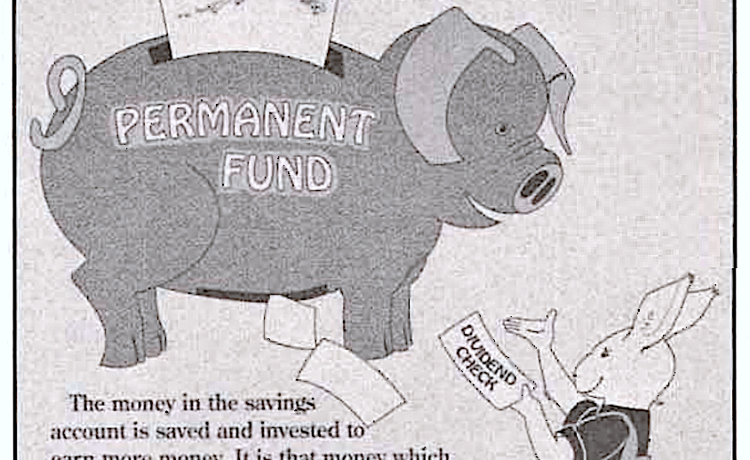 Educational materials from the 1990 annual report
Does the statutory dividend serve “all generations of Alaskans”?
Putting aside the use of the fund’s earnings for non-dividend purposes, my primary interest is about how the 1982 dividend calculation affects the funds’ long term health and earnings power. Does this reliance on a rolling five-year average result in a measured withdrawal? Or can it push it to its limit, where successive draws lead to a shrinking or disappearing fund?
Because it’s called the “Permanent Fund,” and the founding legislation of the fund calls for the fund to “benefit all generations of Alaskans,” I wanted to dig into how this statutory dividend has worked over the years and ask about its relevance in the long term, given the fund’s dual role laid out in state law as both a “savings device” that is managed to “allow the maximum use of disposable income.” (AS 37.13.020). Or more specifically, should a $65 billion fund that now has billions in tech stocks, Asian venture capital funds, biotech startups, and Snapchat be expected to grow while paying out a dividend formula designed when the fund was essentially $3 billion in bonds and government treasury bills?
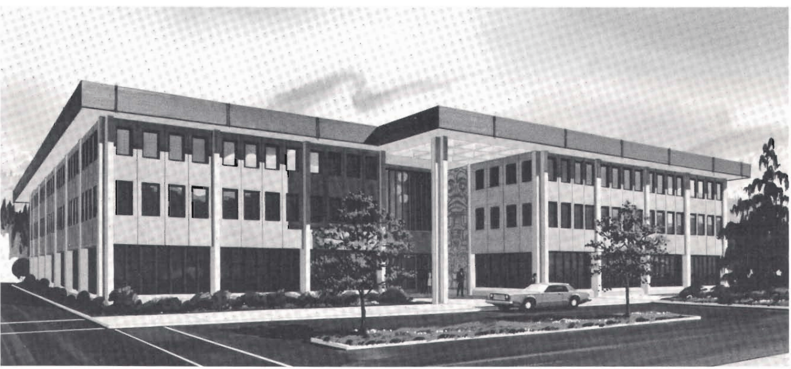Image: APFC office in the 1984 annual report
Alaskans have gotten to know the Permanent Fund through nearly four decades of dividends. With the exception of the first year and the last three, all dividends have been determined by the 1982 calculation. Since the mid 1990s, rarely has the dividend been below $1,000.
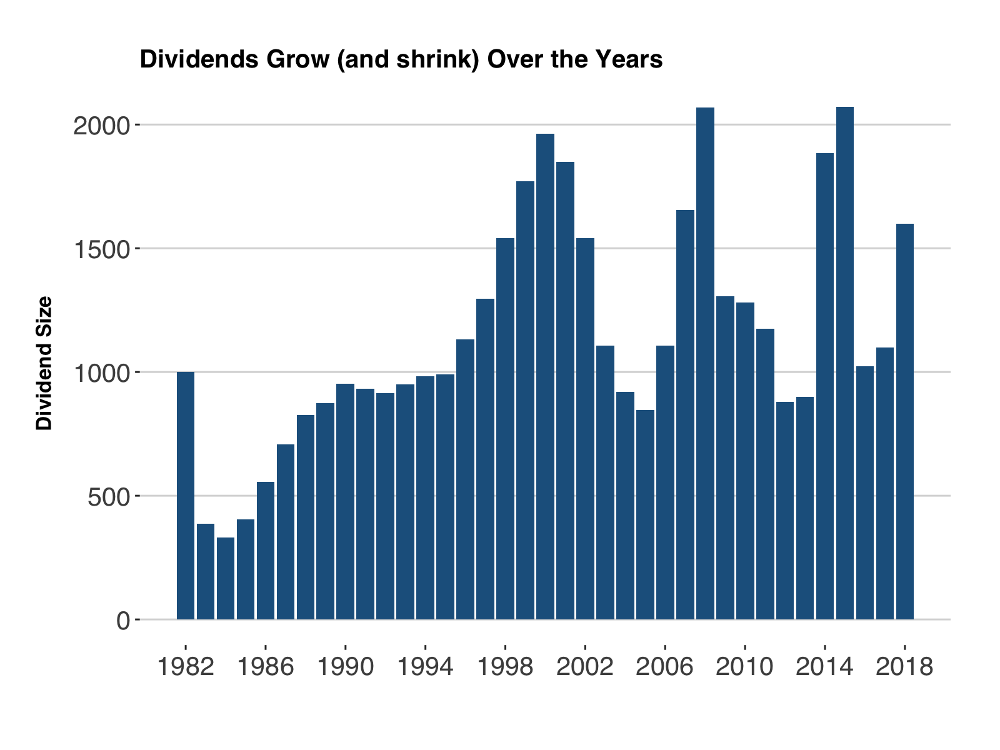
The fund overall has grown from royalty payments in the early years and from stock market gains in recent years.
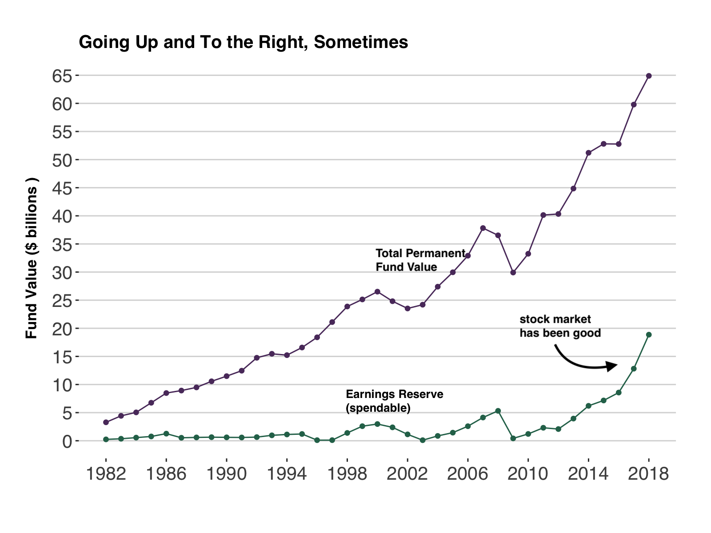
The Formula
Feel free to skip this section if you know it like the back of your hand. In a very simplified manner the amount is calculated based on a five-year average of the fund’s earnings, which sounds simple and downright sensible (to be dissected later).
To be precise, it’s half of 21% of the fund’s realized earnings and interest over the past five years, minus expenses and previously owed dividends. It’s finally divided by the number of eligible Alaskans.
Earnings are Volatile
This is what annual statutory net income looks like since 1982.
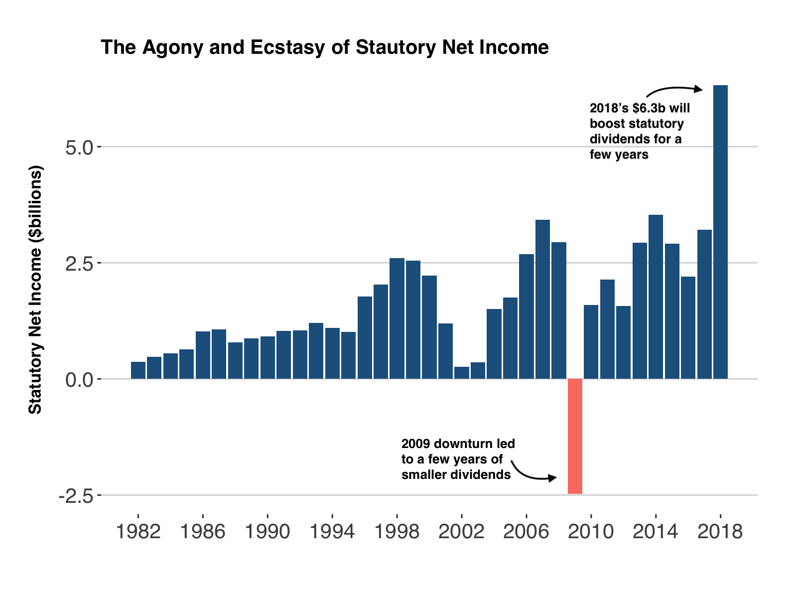 The traditional calculation’s five-year rolling average serves to dampen the peaks and troughs. If the dividend formula were based only on the current year’s earnings, there would be years of feast and famine, including nothing in 2009. 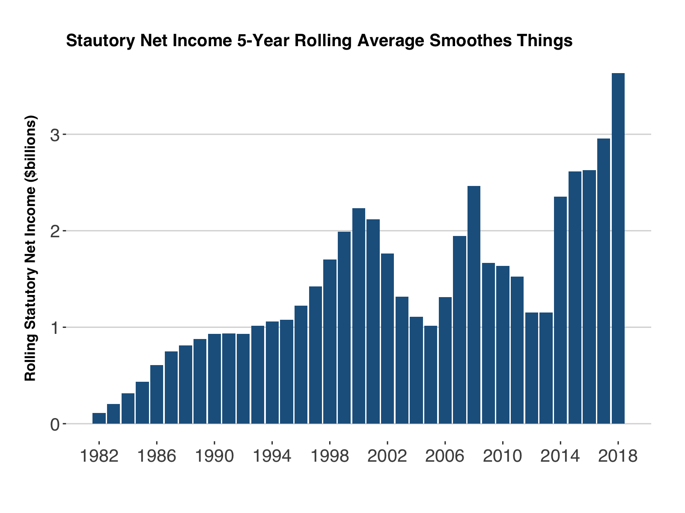 Beneath these earnings has been a quiet four-decade transformation from a young oil savings account to a globally significant sovereign wealth fund with investments, earnings patterns, and risk strategies the 1982 Alaska Legislature could not have imagined.
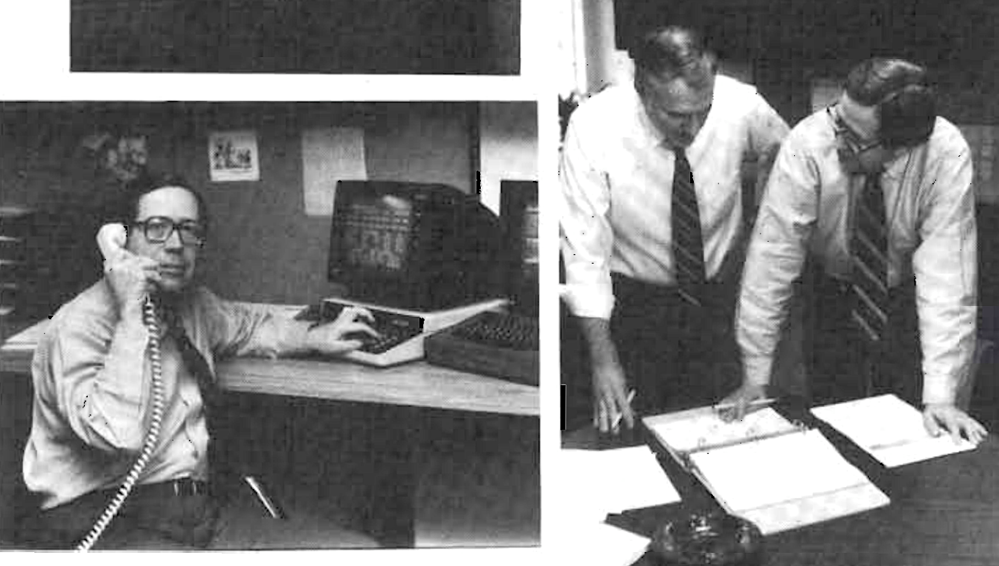1984 Annual Report
The 2019 Permanent Fund Looks Nothing Like the 1983 Permanent Fund
At the time of the dividend calculation law’s passage, the Permanent Fund was basically a $3.3 billion in U.S. treasury bills, government bonds, and CDs. Fund managers were first allowed to invest in the stock market in 1982, but they did it with a slow ramp up. The 1982 annual report described the cautious approach of the early days of the fund.
“Confronted by high inflation, highly volatile markets, and significant economic uncertainty, the trustees chose to adopt a conservative investment approach…as a result of the invest emphasis being placed on very short maturities, the Permanent Fund was essentially operated as a ‘money market fund’ until 1982.”
A decade after its founding, only 12% of the fund was invested in the stock market in 1988. A full 83% was in bonds and treasuries, with the remainder in real estate. It wasn’t until 1990 that the fund was legally allowed to buy foreign stocks and bonds. But the 1990s saw both a roaring stock market and an appetite for more risk. By 2000 the target equity allocation was up to 54%.
Starting in 2004, the fund had begun to invest millions into alternative assets that require sophistication, patience, and the willingness to stomach risk. The fund put money into absolute return strategy funds (hedge funds) and private equity: non-listed, often distressed companies that managers seek to reinvent after slashing costs. (What Mitt Romney used to do). They also gave the fund entry into venture capital funds that invest in early stage startups.
As the housing market peaked in 2007 and the US stock market reached all-time highs, the fund’s target asset allocation dedicated 6% to private equity and 6% absolute return (hedge funds). The 2019 portfolio is a vast web of active stock managers, funds of funds, complex debt instruments, tech startups, infrastructure bets, and foreign real estate, in addition to a lot of stocks and bonds. The days of predictable earnings from bonds are long over.
Earnings are Getting More Volatile
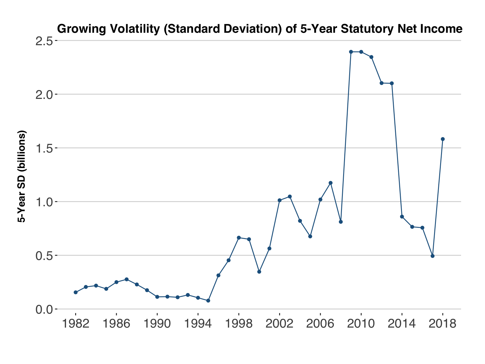
You can see a bit of an inflection point in the mid 90’s when a surging stock market (followed by the bursting of the tech bubble, a downturn, and the leadup to the 2008 financial crisis). The latter years should be expected to show a larger standard deviation due to growing assets . Below I have divided the five-year standard deviation by the fund value for a better comparison.
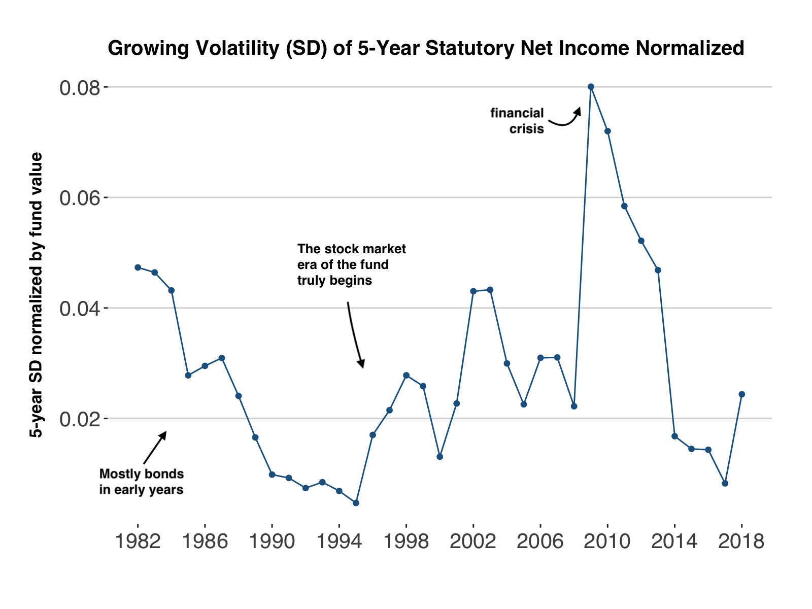
Volatility should be expected in an investment account that is saving for the long term. It’s the price of admission for assets that you expect to beat inflation and hope to reward you a premium for the risk you bear. But the Permanent Fund’s owners (Alaskans) also expect to be paid on an annual basis with the dividend.
What Sort of Draw is Sustainable?
In the personal finance world, people talk about their “safe withdrawl rate,” the annual percentage of one’s funds that they can reasonably expect to last them through a 30 or 40 year retirement. The generally acccepted rule is 4 percent. It fails (goes to zero) in some bad market outcomes and does great in many market simulations. As of last year, Alaska has a law that caps spending at 5.25% of a rolling fund value, but there has been no real limit in place up until now. (For simplicity, I show the draw as a percentage of the respective year value). Here’s how the past dividends compared
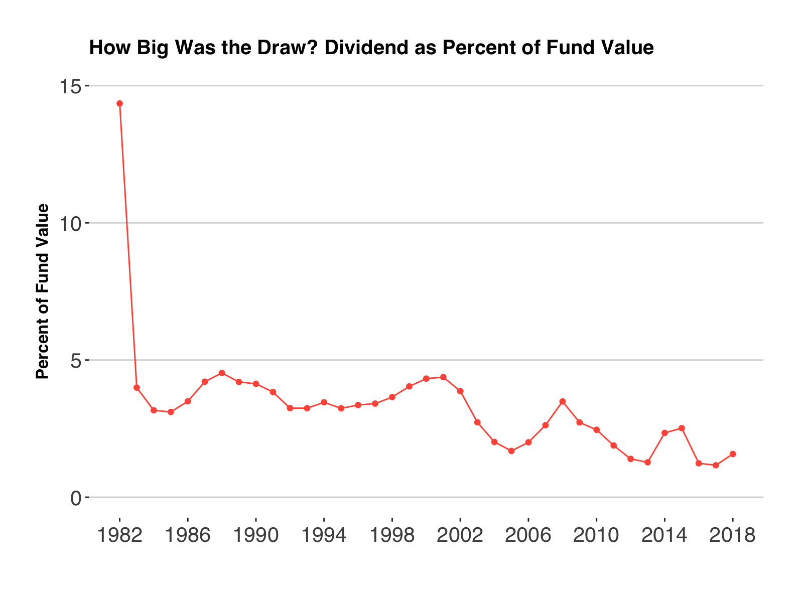
After several years of lawsuits, when the first dividend appeared in 1982, it was by far the biggest draw relative to fund value. The $470 million spend on dividends ($1,000 per Alaskan) represented 14.3 percent of the fund’s value, however it was not paid from the fund, but rather from general fund dollars the legislature appropriated. In the above chart, 1982’s dividend sucks all of the air out of the room. Here are the dividends without the first year:
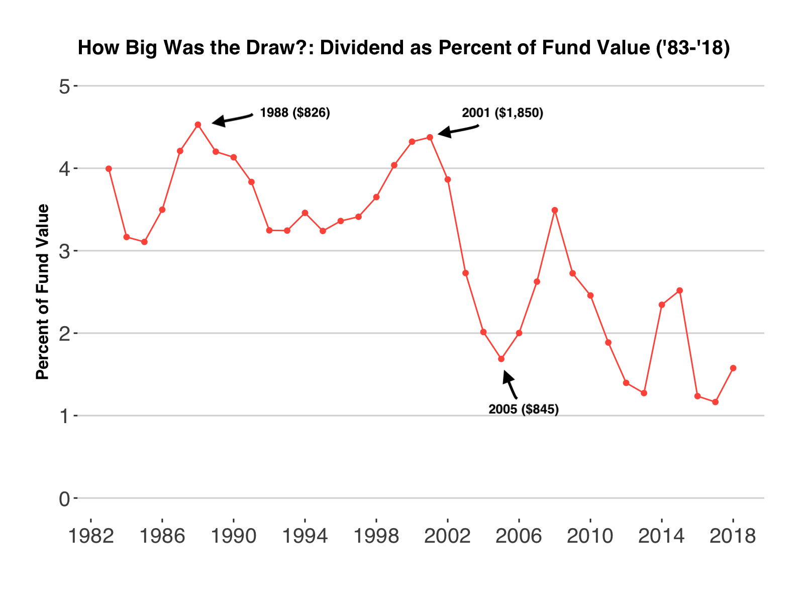
There is huge variation in the percent of market value of each year’s dividend, ranging from more than 4% to 1%.
After 1982, the next largest is 1988’s draw at 4.5% for a $826.93 dividend. In 2001, the $1,850.28 dividend represented a 4.3 percent chunk of the fund. While the median draw is 3.2 percent, for seven years the draw was above 4 percent. The draw was below two percent in another seven years. The lowest draw as a percentage of the fund was 2017’s dividend, representing just 1.1 percent of the fund’s value.
While the fund has not faced a massive draw in the nearly 40 years of dividends, the relative instability of draw size complicates life for managers trying to protect principal (and maximize earnings) as well as legislators thinking about how to budget.
Dividend Size Does Not Predict Payout Percentage
The chart below is not adjusted for inflation/state population/or fund size, but we can see that similarly sized dividends (from the resident perspective) can represent vastly different draws. In 2014, the $1,884 divided captured 2.3% of the fund, while the similarly sized 2000 dividend of $1,963 represented 4.3% of the fund’s entire assets. The former would not rattle many endowment managers, while the latter may push them to the edge of their comfort. While the corpus is protected under the constitution, sustained overdraws that drain the earnings reserve dramatically lower the fund’s earnings power and viability of dividends.
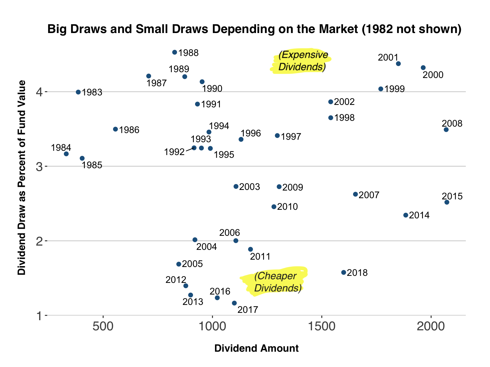
As the fund has grown in value, we’ve seen a decoupling of fund value and dividend size, beginning in the last half of the 1990s. (2016, 2017, and 2018 dividend amounts were decided by the Governor and Legislature, not the 1982 formula.)
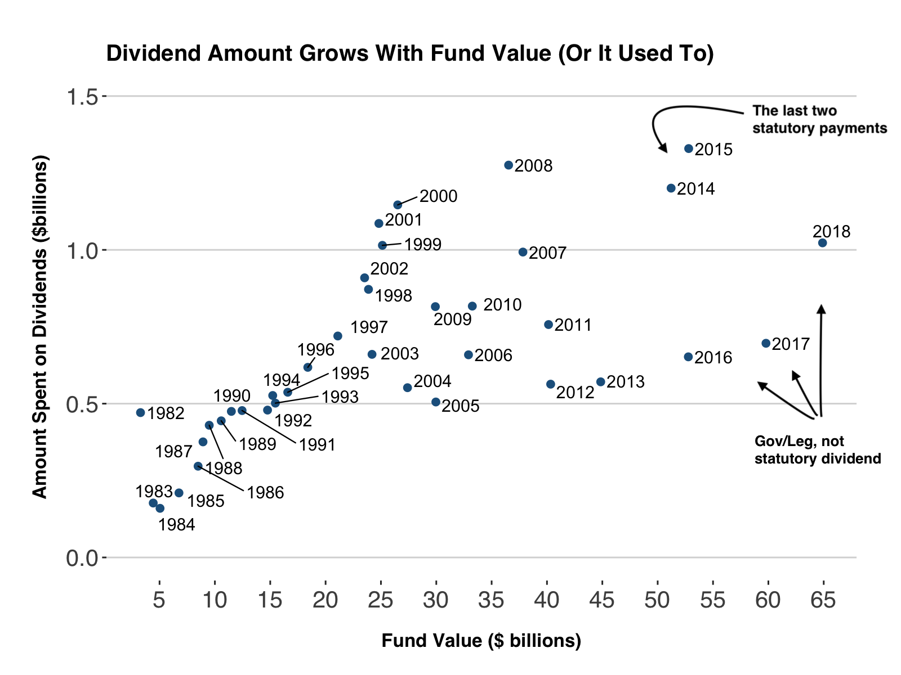
Under the Hood on SNI
Stock dividends and bond interest count as income under the 1982 law. But there’s a human factor too: for earnings to be realized (for example, shares of Amazon stock that have gone up 1,000% over the past several years)the manager must actually sell it. There are billions in unrealized gains sitting the fund’s principal that don’t affect the statutory earnings calculation.
A 2007 Commonwealth North report highlighted the conflict that arises from the 1982 payout calculation.
“The realized earnings of the Fund—and therefore the payout for dividends—are disconnected from the value of the Fund. As the market is going up, the amount of the Dividend often goes down, and vice versa….In short, the current method for calculating income is outdated.”
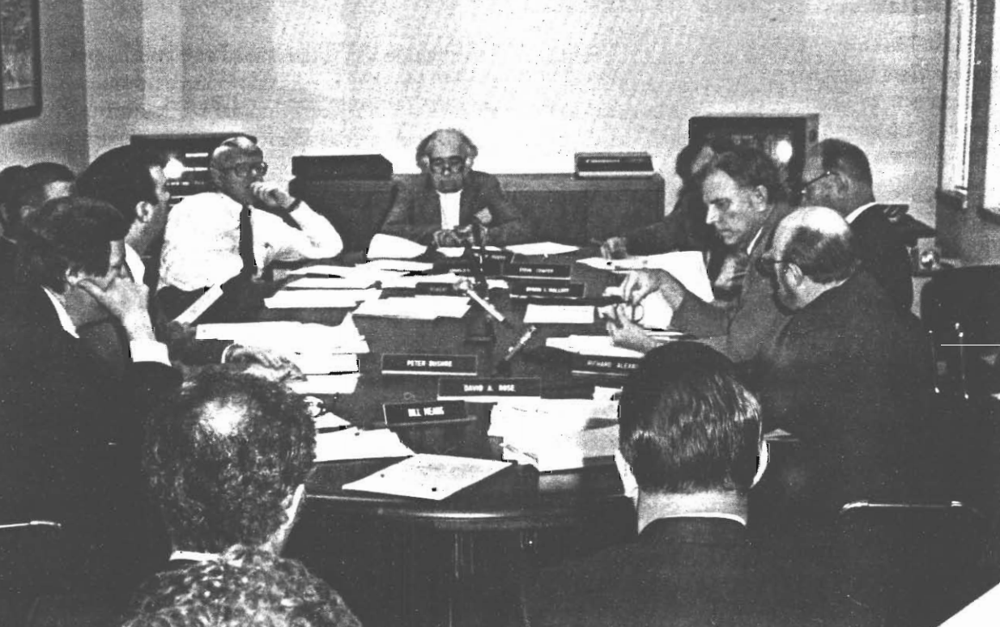Image: 1983 annual report
Earnings amounts are linked to fund spending (dividend calculation), but don’t necessarily fully reflect the health or standing of the overall fund. This sounds like a footnote, but it’s important to the fund’s long term health for a couple of reasons.
The alternative to the earnings based payout is the endowment style, Percent of Market Value (POMV) approach that limits draws to a small portion of the fund, like the “safe withdrawal amount”.
Marc Langland, former APFC chair wrote in the 2002 Trustees Papers that POMV would “free Permanent Fund managers from the need to cash out investments in order to fund the dividend at a time when holding the investments would maximize long term earnings.” Langland pointed out that using a percentage could have a stabilizing effect, by “severing its tie to the realized income of the fund and by dampening its connection to fluctuations in the stock and bond market.”
POMV: Problem Solved? or Conflicting Laws
The 2018 Alaska Legislature passed a law that limits the total draw (funding for government as well as dividends) to 5.25% of its rolling fund value now and going down to 5% in 2021. This POMV-based law is in line what the Permanent Fund Trustees have been seeking for decades, although critically it is not a constitutional amendment, as they requested in 2001 and many times since then. While I am not a lawyer, this statute has the same standing as the 1982 law that sets dividends. The Supreme Court ruled a couple years ago that the legislature’s appropriation powers extend to the dividend.
By the same margin that the Alaska Legislature designated Marmot Day and established the new license plates with a bear, it can spend the entirety of the earnings reserve and go far beyond sustainable spending rates. While the principal of the fund can’t be spent, the earnings from the fund can be spent with a simple majority vote. Under several scenarios (see post script), big drawdowns could undercut the earnings reserve, fund earning potential, and the entire dividend program.
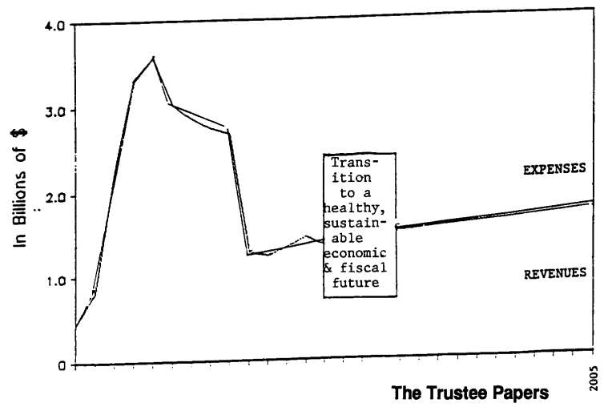Image: Cryptic projection from the 1989 Annual Report
POMV should largely protect against overspending, however, there are scenarios that were presented to the Legislature in which the 5% (or 4%) annual spend drains the earnings reserve to nothing over the course of a handful of years.
To paraphrase the last several months of Alaska politics, a POMV draw, while likely sustainable in the long term, is incompatible with the large 2019 statutory dividend (thanks to a long bull market and a huge year of realized earnings in 2018) unless the state cuts the budget very deeply or raises money through taxes. I’ll leave that one for another day though.
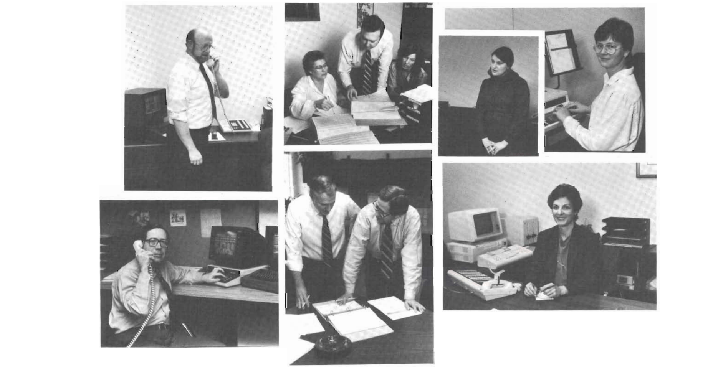
Post Script: Nightmare scenarios for the Permanent Fund:
-
Anticipating a downturn, managers sell stocks and build a couple years of massive statutory net income. The fund plunges 50%, and the successive statutory dividend draws erode the earnings reserve.
-
Inflation roars back and the legislature declines to put funds towards inflation-proofing the principal, instead dedicating Permanent Fund revenues to cover ever-growing expenses.
-
The Governor or Legislature decide to “pay back” previous dividends in concert with a large current year dividend, leading to a draw that massive drains the earnings reserve Account, forcing managers to sell assets to refill the earnings reserve for spending on government operations and dividends.
-
Amid a global recession, oil drops to $25 per barrel (it was above $100 for years prior to the current decline), further increasing the Alaska’s dependence on permanent fund earnings while ignoring POMV legislation and continuing to draw from the fund through its appropriation powers
-
Voters pass a new constitutional amendment requiring the 1982 statutory draw with no POMV backstops. While the principal is protected under the constitution, the case reaches the Alaska Supreme Court when the legislature attempts to pay dividends from the corpus
-
A constitutional amendment that requires a “floor” on the dividend (say, $2,000) requires tapping the corpus after Alaska’s population surges to 2 million amid a decade-long drought in California
About:
The data used in this comes from the Alaska Permanent Fund Division and the Alaska Permanent Fund Corporation. The Alaska Legislature (in most years) has put up money to inflation-proof the principal of the fund.
The code and raw data are available on this GitHub repo
Analysis done in Python with plots in R/ggplot2.